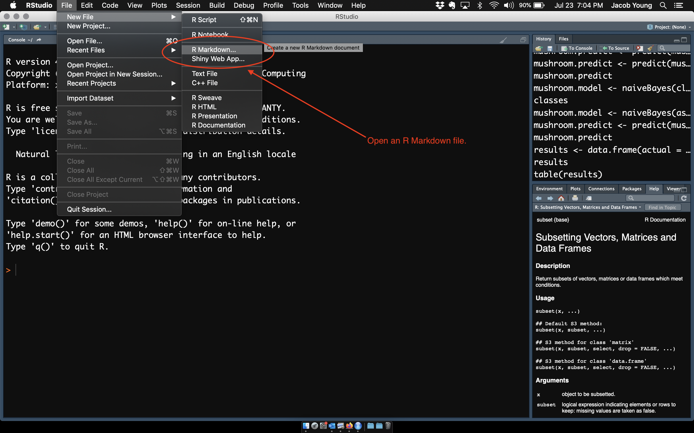
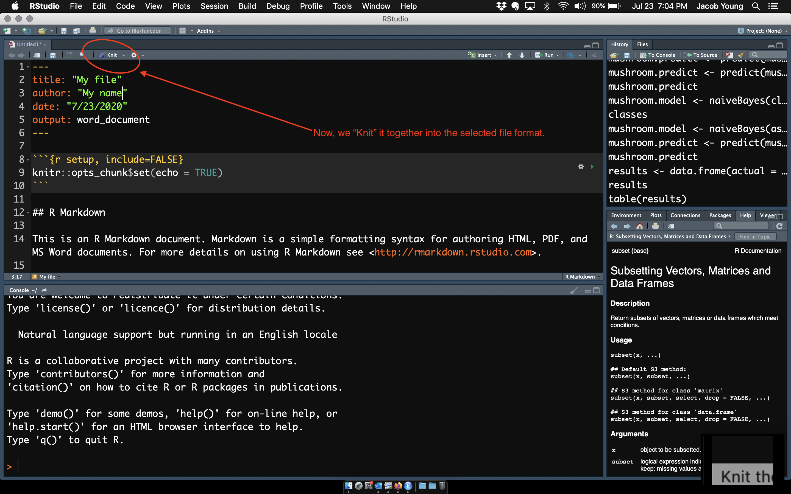

A great feature of RStudio is that you can create “reproducible” documents using R Markdown. In other words, it allows you to write all of the text, syntax for the analysis, etc. and keep it in a document. This way you are not bouncing between programs and everything is reproducible. This is ideal if you are using a publicly available data set.
First, you need to install the rmarkdown package using:
Now, let’s take a look at how it works. Open a new R Markdown file using the drop-down menu as shown below:

Then, use the options to pick the type of file you want to create.
Afterwards, click on the knit function in the .Rmd pane:

You did it!
Easy enough right? Great! That was a simple example, there is a lot more you can do. If you are ready to charge forward, then here are some helpful links:
Get inspired by looking through the R Markdown gallery.
Walk through the R Markdown lessons in the R Studio website.
Take a look at the RWorkshop gitub page.
You will see a .Rmd file for all of the sections we covered today. Let’s look through a few.
Now, let’s take a look at a description of the WOPINS Site 1 data, part of a study funded by the National Institute of Justice.